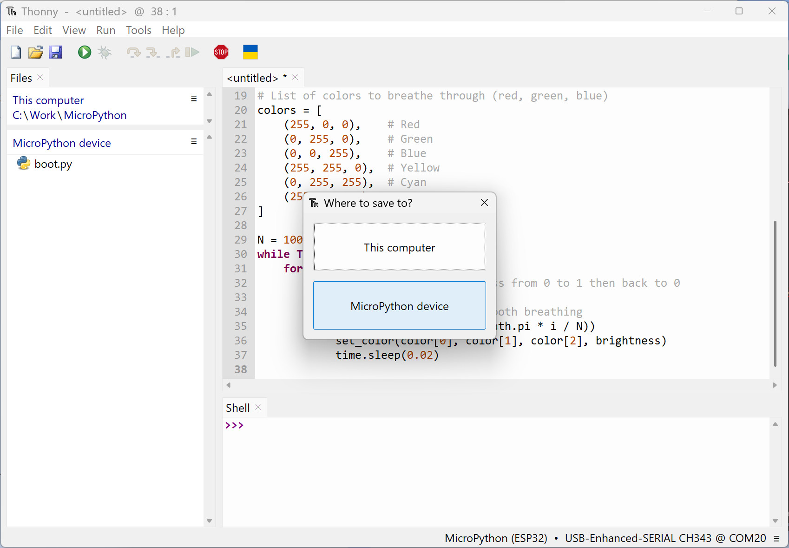
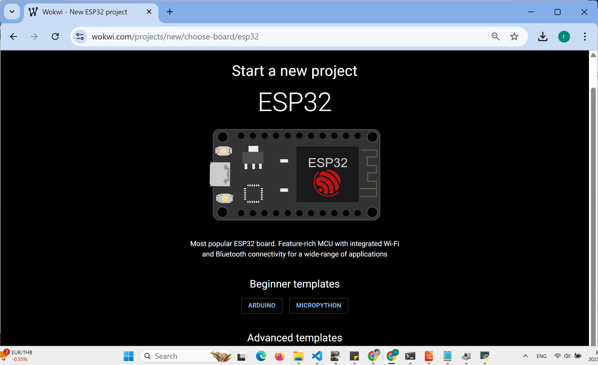

การเขียนโปรแกรม MicroPython สำหรับบอร์ด Espressif ESP32#
Keywords: Python 3, MicroPython, Espressif SoCs, ESP32 / ESP32-S3, Thonny IDE, Arduino Lab for MicroPython
- MicroPython สำหรับบอร์ด ESP32
- การติดตั้งเฟิร์มแวร์ MicroPython-ESP32
- การติดตั้งใช้งาน Thonny IDE
- ตัวอย่างการติดตั้งเฟิร์มแวร์ MicroPython-ESP32S3 โดยใช้ไฟล์ .uf2
- ตัวอย่างโค้ด MicroPython
- การบันทึกโค้ดลงในไฟล์สำหรับ MicroPython
- การใช้งาน Arduino Lab for MicroPython
- การใช้งาน Viper-IDE for MicroPython
- การใช้คำสั่ง mpremote เพื่อจัดการระบบไฟล์แฟลชของ MicroPython
- การคอมไพล์โค้ดให้เป็น MicroPython Bytecode
- การคอมไพล์เฟิร์มแวร์ MicroPython จากซอร์สโค้ด
- เอกสารออนไลน์สำหรับอ้างอิงและศึกษาเพิ่มเติม
▷ MicroPython สำหรับบอร์ด ESP32#
MicroPython ("ไมโครไพธอน") เป็นซอฟต์แวร์ประเภทโอเพ่นซอร์ส (Open Source) ที่พัฒนาขึ้นโดยอ้างอิงจาก Python 3.4+ ทำหน้าที่เป็น Python Runtime สำหรับชิปไมโครคอนโทรลเลอร์ และรองรับบอร์ดไมโครคอนโทรลเลอร์หลายชนิด เปรียบเทียบได้กับกรณีของ CPython ซึ่งเป็น C Implementation ของ Python สำหรับคอมพิวเตอร์ทั่วไป ดังนั้นการใช้งาน MicroPython จำเป็นต้องเลือกไฟล์ Firmware ให้ตรงกับบอร์ดที่จะใช้
MicroPython GitHub สำหรับ ESP32 Port ดูได้จาก
MicroPython Runtime มีองค์ประกอบที่สำคัญเช่น
- Python Interpreter: เป็นตัวแปลโค้ดในภาษา Python ที่แปลงโค้ด
.pyเป็นคำสั่งระดับต่ำที่ฮาร์ดแวร์หรือระบบปฏิบัติการเข้าใจได้ หรือ ทำคำสั่งต่าง ๆ ในไฟล์.mpyซึ่งเป็นไฟล์แบบ "ไบต์โค้ด" (Bytecode) สำหรับ MicroPython ที่ถูกคอมไพล์จากไฟล์ซอร์สโค้ด.pyโดยใช้คำสั่งmpy-crossให้เหมาะสมกับ MicroPython ตามสถาปัตยกรรมของซีพียูที่ใช้งาน และมีข้อดีคือ.mpyช่วยประหยัดพื้นที่ของไฟล์ และรันโค้ดได้เร็วกว่าในกรณีที่ใช้ไฟล์.py - Flash-based Filesystem: ระบบไฟล์แบบแฟลชสำหรับเก็บไฟล์ เช่น
boot.py,main.pyและไดเรกทรอรี เช่น/lib - Standard Python Libraries: ได้แก่ไลบรารีมาตรฐานของไพธอน เช่น
time,sys,os,math - MCU-Specific Python Libraries: เป็นไลบรารีที่ใช้งานเฉพาะกับชิปไมโครคอนโทรลเลอร์
เช่น
machineเพื่อใช้งานวงจรฮาร์ดแวร์ภายในชิปไมโครคอนโทรลเลอร์ - REPL (Read-Eval-Print Loop): ส่วนติดต่อกับผู้ใช้สำหรับรับคำสั่ง Python ทีละบรรทัด ประมวลผลและแสดงผลลัพธ์แบบโต้ตอบทันที
ในบทความนี้ จะกล่าวถึงการใช้งาน MicroPython สำหรับบอร์ดไมโครคอนโทรลเลอร์ที่ใช้ชิป Espressif SoC ซึ่งสามารถจำแนกตามสถาปัตยกรรมของซีพียูได้ดังนี้
- ESP32 (32-bit Xtensa LX6, dual-core)
- ESP32-S2 (32-bit Xtensa LX7, single-core)
- ESP32-S3 (32-bit Xtensa LX7, dual-core)
- ESP32-C3 (32-bit RISC-V / RV32IMC, single-core)
- ESP32-C6 (32-bit RISC-V / RV32IMAC, single-core)
การเลือกใช้งานไฟล์ MicroPython Firmware นอกจากต้องพิจารณาตามสถาปัตยกรรมของ Espressif SoC และจำแนกตามบอร์ดของผู้ผลิต (Board Vendors) ยังต้องพิจารณาการจำแนกบอร์ดเป็นสองกลุ่มหลัก คือ มีหรือไม่มีชิป PSRAM (pseudo-static RAM) ติดตั้งมาด้วยหรือไม่ ซึ่งโดยทั่วไปมีความจุ 2MB, 4MB หรือ 8MB มีทั้งแบบ On-chip และ External
PSRAM เป็นหน่วยความจำแบบ RAM (Random Access Memory) ที่มีลักษณะการทำงานคล้ายกับ Static RAM (SRAM) และนิยมใช้การเชื่อมต่อแบบ SPI ((Serial Peripheral Interface)) อาจเป็นแบบ Single-Bit, Dual-Bit, Quad-Bit, Octal-Bit โดยใช้สายข้อมูล (Data Lines) ขนาด 1 บิต ถึง 8 บิต การเพิ่มจำนวนบิตในช่องทางข้อมูลจะช่วยเพิ่มความเร็วในการส่งข้อมูลระหว่าง PSRAM กับไมโครคอนโทรลเลอร์
ไฟล์ MicroPython-ESP32 Firmware สามารถดาวน์โหลดได้จาก
micropython.org/download/esp32/
ถ้าเป็นบอร์ด ESP32 ที่ไม่มีชิป PSRAM ก็จะใช้ไฟล์ MicroPython Firmware ประเภท ESP32_GENERIC
รูปภาพ: การดาวน์โหลดไฟล์ MicroPython สำหรับ ESP32 (ESP32_GENERIC)
บอร์ด ESP32-S2 / ESP32-S3 มีวงจรภายในที่รองรับการทำงานแบบ USB Native
ซึ่งหมายความว่าชิปสามารถสื่อสารผ่านพอร์ต USB โดยตรง โดยไม่จำเป็นต้องใช้วงจร USB-to-Serial แยกต่างหาก
ชิปประเภทนี้ สามารถใช้ไฟล์ Firmware ในรูปแบบที่เรียกว่า .uf2 (USB Flashing Format)
แต่จะต้องทำให้ติดตั้ง UF2 Bootloader ให้ได้ก่อน
(เช่น เลือกใช้เฟิร์มแวร์ TinyUF2)
ยกตัวอย่าง เช่น บอร์ด Adafruit ESP32-S3 Feather (4MB Flash 2MB PSRAM)
และจะต้องทำให้บอร์ดเข้าสู่โหมด UF2 Bootloader
จากนั้นคอมพิวเตอร์จะมองเห็นบอร์ดเป็นไดรฟ์แฟลช และสามารถคัดลอกไฟล์ .uf2 ลงไปได้แบบ Drag-and-Drop
ระบบจะเขียนเฟิร์มแวร์ลงในหน่วยความจำแฟลชของบอร์ดโดยอัตโนมัติ โดยไม่ต้องใช้โปรแกรมแฟลชเฉพาะทางอย่าง esptool.py
▷ การติดตั้งเฟิร์มแวร์ MicroPython-ESP32#
การติดตั้งเฟิร์มแวร์สำหรับ MicroPython ไปยังบอร์ด ESP32
โดยทั่วไปแล้ว จะอาศัยโปรแกรม Python ที่มีชื่อว่า
esptool.py (หรือ esptool) และเชื่อมต่อระหว่างคอมพิวเตอร์ผ่านพอร์ต
USB-to-serial ไปยังบอร์ด ESP32
ใช้ได้กับระบบปฏิบัติการ Windows, Linux, Mac OS
ดังนั้นถ้าจะใช้ esptool.py คอมพิวเตอร์จะต้องมีโปรแกรม Python 3.x ติดตั้งไว้ใช้งานพร้อมแล้ว
(สำหรับผู้ใช้ Windows สามารถดาวน์โหลดไฟล์ได้จาก
https://www.python.org/downloads/
หรือจาก Microsoft Store)
รูปภาพ: การตรวจสอบดูว่า สามารถใช้ Python สำหรับระบบปฏิบัติการ Windows และเวอร์ชันที่ใช้งาน
รูปภาพ: การติดตั้งโปรแกรม esptool สำหรับ Windows
ถัดไปเป็นตัวอย่างการติดตั้ง esptool.py จะใช้คำสั่ง pip ของ Python (สำหรับ Windows โดยทำคำสั่งใน
Windows Powershell)
pip3 install esptool
จากนั้นให้ลองทำคำสั่งต่อไปนี้ เพื่อดูว่า มีการติดตั้ง esptool ไว้แล้วหรือไม่ และเป็นเวอร์ชันใด
(ในบทความนี้ ได้ทดลองใช้เวอร์ชัน v5.0.2)
python -m esptool version
เมื่อเชื่อมต่อบอร์ด ESP32 กับคอมพิวเตอร์ของผู้ใช้ ผ่านทาง USB จะต้องทำคำสั่งลบข้อมูลทั้งหมดในหน่วยความจำแฟลช (Flash) ของชิป ESP32 ก่อนทำคำสั่ง ให้กดปุ่ม BOOT ค้างไว้ แล้วกดปุ่ม RESET แล้วปล่อย เพื่อทำให้ชิปเข้าสู่โหมด USB-Serial Bootloader
python -m esptool --port <portname> erase-flash
จากนั้นจึงเขียนไฟล์ .bin สำหรับ MicroPython-ESP32 Firmware ไปยังหน่วยความจำแฟลช จำแนกตามชนิดของซีพียู
ESP32 / ESP32-S2:
python -m esptool --port <portname> --baud 460800 write-flash 0x1000 <firmware.bin>
ESP32-S3 / ESP32-C3 / ESP32-C6
python -m esptool --port <portname> --baud 460800 write-flash 0 <firmware.bin>
โดยที่ <portname> จะเป็นชื่อของพอร์ตที่ตรงกับการใช้งานบอร์ด ESP32 ที่กำลังเชื่อมต่อกับคอมพิวเตอร์ของผู้ใช้
- Linux: ชื่อพอร์ตมีลักษณะเช่น
/dev/ttyACM0หรือ/dev/ttyUSB0 - Windows: ชื่อพอร์ตมีลักษณะเช่น
COM4 - Mac: ชื่อพอร์ตมีลักษณะเช่น
/dev/cu.usbmodem01
เมื่อติดตั้งไฟล์ได้แล้ว ให้กดปุ่ม Reset เพื่อเริ่มต้นการทำงานของ MicroPython Runtime
รูปภาพ: ตัวอย่างการใช้คำสั่ง esptool สำหรับติดตั้งไฟล์ MicroPython ESP32-S3 Firmware
(ESP32_GENERIC_S3-SPIRAM_OCT-20250415-v1.25.0.bin)
ตัวอย่างบอร์ด ESP32-S3 ที่สามารถเลือกมาทดลองใช้งาน เช่น
- VCC-GND Studio YD-ESP32-S3
- ESP32-S3-WROOM-1 Module (ESP32-S3-N8R2 / N8R8R8 / N16R8)
- Waveshare ESP32-S3-Nano (ESP32-S3R8)
- on-chip 8MB PSRAM, 16MB Flash memory (W25Q128JVSIQ)
- Waveshare ESP32-S3-Pico (ESP32-S3R2)
- on-chip 2MB PSRAM, 16MB Flash memory (W25Q128JVSIQ)
- Nologo.tech ESP32-S3 Pico
- ESP32-S3R2 (on-chip Quad-SPI PSRAM 2MB, onboard Quad-SPI Flash 8MB)
- ESP32-S3R8 (on-chip Octal-SPI PSRAM 8MB, onboard Quad-SPI Flash 16MB)
- Seeed Studio XIAO ESP32S3 Series (ESP32-S3R8)
รูปภาพ: บอร์ด Nologo.tech ESP32-S3 Pico ที่ได้นำมาทดลองใช้งาน
รูปภาพ: แผนผัง Nologo.tech ESP32-S3 Pico Pinout (และรูปผังวงจร Schematic)
{kind=link}
รูปภาพ: บอร์ด YD-ESP3-S3 ที่ได้นำมาทดลองใช้งาน
รูปภาพ: แผนผัง YD-ESP3-S3 Pinout (และรูปผังวงจร Schematic)
▷ การติดตั้งใช้งาน Thonny IDE#
ในการเขียนโค้ด MicroPython สามารถใช้ซอฟต์แวร์ที่มีชื่อว่า Thonny IDE ซึ่งเป็น Open Source โดยทำคำสั่งเพื่อติดตั้งก่อน
pip install thonny
แล้วเรียกใช้โปรแกรม Thonny ดังนี้
python -m thonny
จากนั้นจะต้องตั้งค่าเพื่อเลือกใช้ Python Interpreter ให้เป็น MicroPython (ESP32)
รูปภาพ: การเชื่อมต่อกับบอร์ด ESP32-S3 โดยใช้ Thonny IDE
▷ ตัวอย่างการติดตั้งเฟิร์มแวร์ MicroPython-ESP32S3 โดยใช้ไฟล์ .uf2#
ถัดไปเป็นตัวอย่างการติดตั้ง tinyuf2
ของ Adafruit ไปยังบอร์ดที่ชิป ESP32-S3-R2
หรือ ESP32-S3-R8 (มีหน่วยความจำ PSRAM ภายในชิป 2MB หรือ 8MB ตามลำดับ)
และมีหน่วยความจำแฟลชภายนอก อย่างน้อย 8MB
ในบทความนี้ได้ทดลองใช้ไฟล์จาก tinyuf2-adafruit_feather_esp32s3-0.35.0 สำหรับบอร์ด Adafruit Feather ESP32-S3
เมื่อแตกไฟล์ .zip ที่ได้ดาวน์โหลดมา ให้ทำคำสั่ง esptool (ใน Windows PowerShell)
ตามตัวอย่างต่อไปนี้ ภายใต้ไดเรกทอรี tinyuf2-adafruit_feather_esp32s3-0.35.0
python -m esptool `
--chip esp32s3 `
write-flash `
--flash-mode dio `
--flash-freq 80m `
--flash-size 8MB `
0x0 bootloader.bin `
0x2d0000 tinyuf2.bin `
0x8000 partition-table.bin `
0xe000 ota_data_initial.bin
จากนั้นจึงดาวน์โหลดไฟล์ .uf2 สำหรับบอร์ด ESP32-S3 (PSRAM) จากเว็บไซต์ของ MicroPython:
ESP32-S3 (with Octal-SPIRAM Support) เมื่อกดปุ่ม Reset บนบอร์ด ในลักษณะ Double Click จะเข้าสู่ UF2 Bootloader Mode
▷ ตัวอย่างโค้ด MicroPython#
ถัดไปเป็นตัวอย่างโค้ด MicroPython สำหรับแสดงข้อมูลเกี่ยวกับเฟิร์มแวร์ และชิป Espressif SoC ที่นำมาใช้งาน
import esp
import machine
import gc
import binascii
import network
import os
def show_chip_info():
# Get Chip revision (hardware version)
chip_rev = esp.flash_user_start()
print(f"- Chip revision: 0x{chip_rev:08x}")
# Get the CPU frequency
print(f"- CPU frequency: {int(machine.freq()//1e6)} MHz")
# Get flash size in byte
flash_size = esp.flash_size()
print(f"- Flash size: {flash_size // (1024*1024)} MB")
try:
psram_size = esp.psram_size() # Get PSRAM info (if available)
if psram_size > 0:
print(f"- PSRAM size: {psram_size // (1024*1024)} MB")
else:
print("- PSRAM: Not available")
except AttributeError:
pass
# Get free memory
print(f"- Free memory: {gc.mem_free()//1024:d} KB")
# Get allocated memory
print(f"- Allocated memory: {gc.mem_alloc()//1024:d} KB")
# Get the machine ID (MAC address of ESP32)
hex_id = binascii.hexlify( machine.unique_id(),':')
print( f"- MAC: {hex_id.decode('ascii')}")
print(32*"-")
print("MicroPython runtime info")
print(32*"-")
names = ['sysname','nodename',
'release','version','machine']
sys_info = dict(zip(names, os.uname()))
for n,v in sys_info.items():
print( "- {:<8s}: '{}'".format(n,v) )
print(32*"-")
gc.collect() # run garbage collector
print("ESP32 Chip Info")
print(32*"-")
show_chip_info()
print(32*"-")
รูปภาพ: ตัวอย่างการรันโค้ดตัวอย่างโดยใช้ Thonny IDE
บอร์ด Nologo.tech ESP32-S3 มี Onboard LED ตรงกับขา GPIO-21 ถัดไปเป็นตัวอย่างโค้ดทำให้ LED กระพริบ
from machine import Pin
import time
# Test board: Nologo.tech ESP32-S3
# Create Pin object for GPIO21 as output
led = Pin(21, Pin.OUT)
while True:
led.value(not led.value()) # Toggle LED state
time.sleep(0.5) # Delay 500 ms
หรือจะเขียนโค้ดตามรูปแบบที่เรียกว่า Asynchronous Programming
โดยใช้ไลบรารี uasyncio ของ MicroPython
ในตัวอย่างนี้ ฟังก์ชัน blink() เป็นฟังก์ชันแบบ coroutine
และภายในใช้คำสั่ง asyncio.sleep(...)
ซึ่งเป็นการหน่วงเวลาแบบ non-blocking
และระหว่างรอเวลาดังกล่าว การทำงานอื่น ๆ ยังสามารถดำเนินต่อไปได้ โดยไม่หยุดทั้งระบบ
import uasyncio as asyncio
from machine import Pin
# Test board: Nologo.tech ESP32-S3
led = Pin(21, Pin.OUT) # Create Pin object for GPIO21 as output
async def blink(): # Define a coroutine method for LED blink
while True:
led.value(not led.value()) # Toggle LED
await asyncio.sleep(0.5) # Non-blocking delay
# Run the asyncio loop
asyncio.run(blink())
ในกรณีที่บอร์ด ESP32 มีวงจร RGB LED (WS2812) ก็สามารถทดลองใช้โค้ดต่อไปนี้
เพื่อลองเปลี่ยนสีของ RGB LED โดยใช้ไลบรารีที่มีชื่อว่า neopixel
from machine import Pin
import neopixel
import time
NUM_LEDS = 1 # Onboard Single-pixel RGB LED (WS2812)
PIN_NUM = 48 # use GPIO48 (for VCC-GND YD-ESP32-S3 board)
np = neopixel.NeoPixel(Pin(PIN_NUM), NUM_LEDS)
def set_color(r, g, b, brightness=1.0):
# Clamp brightness between 0.0 and 1.0
brightness = max(0.0, min(1.0, brightness))
# Scale colors
r = int(r * brightness)
g = int(g * brightness)
b = int(b * brightness)
np[0] = (r, g, b)
np.write()
while True:
set_color(255, 0, 0, brightness=0.2)
time.sleep(0.5)
set_color(0, 255, 0, brightness=0.2)
time.sleep(0.5)
set_color(0, 0, 255, brightness=0.2)
time.sleep(0.5)
หรือจะใช้วิธีปรับความสว่างขึ้นและลงเป็นระดับ และเปลี่ยนสีได้ โดยเว้นช่วงเวลาสั้น ๆ ดังนี้
from machine import Pin
import neopixel
import time
import math
NUM_LEDS = 1 # Onboard Single-pixel RGB LED (WS2812)
PIN_NUM = 48 # GPIO48 for your board
np = neopixel.NeoPixel(Pin(PIN_NUM), NUM_LEDS)
def set_color(r, g, b, brightness=1.0):
brightness = max(0.0, min(1.0, brightness))
r = int(r * brightness)
g = int(g * brightness)
b = int(b * brightness)
np[0] = (r, g, b)
np.write()
# List of colors to breathe through (red, green, blue)
colors = [
(255, 0, 0), # Red
(0, 255, 0), # Green
(0, 0, 255), # Blue
(255, 255, 0), # Yellow
(0, 255, 255), # Cyan
(255, 0, 255), # Magenta
]
N = 100 # number of levels
while True:
for color in colors:
# Breathing effect: brightness from 0 to 1 then back to 0
for i in range(0, N):
# Use a sine wave for smooth breathing
brightness = (math.sin(math.pi * i / N))
set_color(color[0], color[1], color[2], brightness)
time.sleep(0.02)
รูปภาพ: บอร์ด ESP32-S3 ที่ได้นำมาทดสอบการทำงานของโค้ดตัวอย่าง
▷ การบันทึกโค้ดลงในไฟล์สำหรับ MicroPython#
การบันทึกโค้ด MicroPython ลงในไฟล์ มีตัวเลือก 2 กรณี คือ
- บันทึกไฟล์เก็บไว้ในคอมพิวเตอร์ของผู้ใช้ และสามารถใช้ Thonny IDE รันโค้ดดังกล่าวโดยใช้บอร์ด ESP32
- บันทึกไฟล์เก็บไว้ใน Flash Filesystem ของบอร์ด ESP32 เช่น บันทึกเป็นไฟล์
main.pyไฟล์นี้จะถูกเรียกให้ทำงานโดยอัตโนมัติหลังจากมีการรีเซตการทำงานของบอร์ดทุกครั้ง (ทำงานต่อจากคำสั่งในไฟล์boot.py)

รูปภาพ: การบันทึกโค้ดลงในไฟล์ main.py และเก็บไว้ในระบบไฟล์ที่ใช้หน่วยความจำแฟลชบนบอร์ด ESP32
▷ การทดลองใช้งาน Wokwi จำลองการทำงานของ MicroPython-ESP32#
ผู้ใช้สามารถไปยังเว็บไซต์ของ Wokwi แล้วเลือกบอร์ดในกลุ่ม ESP32 เพื่อสร้างโปรเจกต์ใหม่สำหรับเขียนโค้ด MicroPython (เลือก MicroPython Template) เช่น
- ESP32 เป็นบอร์ดรุ่น ESP32-DevkitC-v4
- ESP32-S3 เป็นบอร์ดรุ่น ESP32-S3 DevkitC-1
- ESP32-C3 เป็นบอร์ดรุ่น ESP32-C3 DevkitM-1
รูปภาพ: การเลือกบอร์ดไมโครคอนโทรลเลอร์และสร้างโปรเจกต์ใหม่สำหรับ Wokwi

รูปภาพ: การเลือก MicroPython Template สำหรับบอร์ด ESP32-DevkitC-v4
รูปภาพ: ตัวอย่างสำหรับบอร์ด ESP32-DevkitC-v4 ซึ่งมีการต่อวงจร LED เพิ่ม ที่ขา GPIO2 และจำลองการทำงานแบบเสมือนจริง (LED Blink)
▷ การใช้งาน Arduino Lab for MicroPython#
นอกจาก Thonny IDE ยังมีซอฟต์แวร์ที่เป็นตัวเลือกอื่นสำหรับการเขียนโค้ด MicroPython ถัดไปเป็นตัวอย่างการใช้งาน Arduino Lab for MicroPython ซึ่งเป็น Web-based Editor สำหรับ MicroPython ที่ทีมงานของบริษัท Arduino.cc ได้จัดทำ และรองรับสำหรับบอร์ดของบริษัท เช่น Arduino Nano ESP32 ซึ่งใช้โมดูล u-blox NORA-W106 และภายในมีชิป ESP32-S3 + 16MB Flash (no PSRAM)
อย่างไรก็ตาม เราก็สามารถใช้ Arduino Lab for MicroPython กับบอร์ด ESP32-S3 ทั่วไปได้ ซึ่งได้มีการติดตั้ง MicroPython Firmware ไว้แล้ว
รูปภาพ: การเชื่อมต่อกับบอร์ด ESP32-S3 โดยใช้รูปแบบที่เรียกว่า Web-Serial (ให้กดปุ่ม Connect เพื่อเชื่อมต่อ)
รูปภาพ: ตัวอย่างการบันทึกโค้ดลงในไฟล์ main.py เก็บไว้ในหน่วยความจำแฟลช และรันโค้ด
▷ การใช้งาน Viper-IDE for MicroPython#
Viper-IDE เป็นซอฟต์แวร์ประเภท Open Source (GitHub repo) อีกหนึ่งตัวเลือกสำหรับ Web-based IDE แต่ก็สามารถติดตั้งใช้งานแบบ Local / Offline ได้
ผู้ใช้สามารถเขียนโค้ด MicroPython โดยใช้ Web Browser และเชื่อมต่อกับบอร์ดไมโครคอนโทรลเลอร์ที่ได้มีการติดตั้ง MicroPython Firmware ไว้แล้ว
รูปภาพ: การใช้งาน Viper-IDE ร่วมกับบอร์ด ESP32-S3 เชื่อมต่อด้วยวิธี WebSerial / WebUSB
▷ การใช้คำสั่ง mpremote เพื่อจัดการระบบไฟล์แฟลชของ MicroPython#
โปรแกรมชื่อ mpremote สามารถนำมาใช้ในการเขียนอ่านไฟล์ระหว่างคอมพิวเตอร์ของผู้ใช้
กับระบบไฟล์แฟลชของ MicroPython
เริ่มต้นด้วยการติดตั้งซอฟต์แวร์ mpremote โดยใช้คำสั่ง pip ดังนี้
pip install mpremote
ถัดไปให้ลองใช้คำสั่งต่อไปนี้ เพื่อแสดงรายการไฟล์และไดเรกทอรีในระบบไฟล์แฟลชของ MicroPython
อาจมีการระบุชื่อพอร์ตของบอร์ด ESP32 ที่กำลังเชื่อมต่อกับคอมพิวเตอร์ผู้ใช้
เช่น /dev/ttyUSB0 หรือ /dev/ttyACM0 สำหรับ Linux
ถ้าเป็น Windows จะเป็น COM3 หรือเลขอื่น ๆ
python -m mpremote ls
python -m mpremote exec "import os; print(os.listdir())"
หรือมีการระบุชื่อพอร์ต
python -m mpremote connect /dev/ttyUSB0 ls
ตัวอย่างการทำคำสั่งเพื่อนำไปจากคอมพิวเตอร์ผู้ใช้ ไปใส่ไว้ในระบบไฟลแฟลชภายใต้ไดเรกทอรี /lib
python -m mpremote cp file.py :/lib/
ตัวอย่างการทำคำสั่งลบไฟล์ main.py
python -m mpremote fs rm :/main.py
ตัวอย่างการทำคำสั่ง Soft Reset
python -m mpremote reset
▷ การคอมไพล์โค้ดให้เป็น MicroPython Bytecode#
การคอมไพล์หรือแปลงไฟล์ .py ให้เป็น .mpy (MicroPython Bytecode หรือ .mpy)
จะต้องใช้โปรแกรมของ MicroPython ที่มีชื่อว่า mpy-cross
แต่แนะนำให้ใช้ WSL2 Ubuntu สำหรับขั้นตอนนี้
# Install git and build tools (gcc, make, etc.)
$ sudo apt install git build-essential
# Clone source code from the MicroPython repo
$ cd $HOME
$ git clone https://github.com/micropython/micropython.git
# Change directory to the mpy-cross compiler source
$ cd micropython/mpy-cross
# Build the mpy-cross compiler
$ make
คำสั่งสำหรับคอมไพล์ไฟล์ main.py ให้ได้ไฟล์ main.mpy
(ในตัวอย่างนี้ ไฟล์ main.py อยู่ใน C:\Work\MicroPython\
ในระบบไฟล์ของ Windows)
# Compile main.py to main.mpy for ESP32/ESP32-S2/ESP32-S3 (Xtensa arch)
$ ./build/mpy-cross -march=xtensawin /mnt/c/Work/MicroPython/main.py
เมื่อได้ไฟล์ main.mpy ในระบบไฟล์ของ Windows แล้ว ให้ทำคำสั่ง mpremote
(ใน Windows PowerShell) เพื่อนำไปใส่ลงในระบบไฟล์แฟลชของ ESP32
python -m mpremote cp main.mpy :/
ทำคำสั่งเพื่อให้รันโค้ดใน main.mpy
python -m mpremote exec "import main"
▷ การคอมไพล์เฟิร์มแวร์ MicroPython จากซอร์สโค้ด#
ขั้นตอนการคอมไพล์ซอร์สโค้ดของ MicroPython สำหรับชิปของ Espressif เช่น ESP32 / ESP32-S3 มีขั้นตอนดังนี้ (ใช้ WSL2 Ubuntu / Ubuntu 24.04 LTS)
1) ติดตั้งโปรแกรมใน Ubuntu ที่เกี่ยวข้อง
$ sudo apt update -y
$ sudo apt install -y python3 python3-dev git build-essential cmake
$ sudo apt install -y gcc-arm-none-eabi libnewlib-arm-none-eabi
2) ดาวน์โหลด Source Code ของ MicroPython จาก GitHub และติดตั้งโมดูลต่าง ๆ ที่เกี่ยวข้อง
# Download the MicroPython sourcecode from Github
$ git clone https://www.github.com/micropython/micropython
# Change the working directory to './micropython'
$ cd micropython/
# Download or update all submodules
$ git submodule update --init --recursive
3) ลองคอมไพล์โค้ดสำหรับโปรแกรมชื่อ mpy-cross (ใช้ในการคอมไพล์ไฟล์ .py ให้เป็น .mpy)
# Build the MicroPython cross-compiler
$ make -C mpy-cross
ตัวอย่างของไลบรารีต่าง ๆ สำหรับ MicroPython-ESP32 ที่ได้มีการคอมไพล์ ให้เป็นไฟล์ .mpy เช่น
espnowmachineasynciorequestsntptimesslwebreplurequestsaioespnowdhtonewireds18x20neopixelumqtt
4) ดาวน์โหลดซอร์สโค้ดสำหรับ ESP-IDF v5.x (ทดลองใช้เวอร์ชัน v5.5)
โดยเลือกติดตั้งในไดเรกทอรี $HOME/esp
# Create a directory for ESP-IDF: $HOME/esp
$ mkdir -p $HOME/esp
# Change the working directory to the user home directory
$ cd $HOME/esp
# Clone the ESP-IDF , including all submodules
$ git clone -b v5.5 --recursive \
https://github.com/espressif/esp-idf.git esp-idf-v5.5
$ ln -s esp-idf-v5.5 esp-idf
$ cd esp-idf
# Install required tools
$ ./install.sh
# Activate ESP-IDF environment
$ source ./export.sh
รูปภาพ: การติดตั้งซอฟต์แวร์ Espressif ESP-IDF v5.5
5) คอมไพล์โค้ดเพื่อสร้างไฟล์เฟิร์มแวร์ เช่น สำหรับบอร์ดที่มีชิป ESP32-S3 ที่มีหน่วยความจำ Octal SPIRAM
# Build firmware for the ESP32-S3 with SPIRAM support.
# Change the working directory to ports/esp32
$ cd ports/esp32
# Activate ESP-IDF environment
$ source $HOME/esp/esp-idf/export.sh
$ make BOARD=ESP32_GENERIC_S3 clean
$ make BOARD=ESP32_GENERIC_S3 BOARD_VARIANT=SPIRAM_OCT -j4
ไฟล์เอาต์พุตที่ได้จะอยู่ในไดเรกทอรี build-ESP32_GENERIC_S3-SPIRAM_OCT ชื่อไฟล์ micropython.bin
หากต้องการแก้ไขค่า FreeRTOS Tick Rate ก็ให้แก้ไขไฟล์ boards/sdkconfig.base
รูปภาพ: การแก้ไขค่า FreeRTOS Tick Rate (เปลี่ยนจากความถี่ 100Hz เป็น 1000Hz) สำหรับ MicroPython-ESP32
รูปภาพ: ขั้นตอนการเขียนไฟล์ MicroPython Firmware (micropython.bin)
ไปยังบอร์ด ESP32-S3
▷ เอกสารออนไลน์สำหรับอ้างอิงและศึกษาเพิ่มเติม#
- MicroPython Online Documentation
- Getting started with MicroPython on the ESP32
- Quick Reference for the ESP32
- MicroPython Libraries
▷ กล่าวสรุป#
บทความนี้ได้นำเสนอขั้นตอนการติดตั้ง MicroPython Firmware สำหรับ Espressif SoC มีตัวอย่างโค้ด MicroPython และการใช้ซอฟต์แวร์ Thonny IDE และ Arduino Lab for MicroPython ในการเขียนโค้ดและอัปโหลดโค้ดไปยัง บอร์ดไมโครคอนโทรลเลอร์ ESP32-S3 เพื่อรันโค้ดและทดสอบ
บทความที่เกี่ยวข้อง
This work is licensed under a Creative Commons Attribution-ShareAlike 4.0 International License.
Created: 2025-08-09 | Last Updated: 2025-08-17